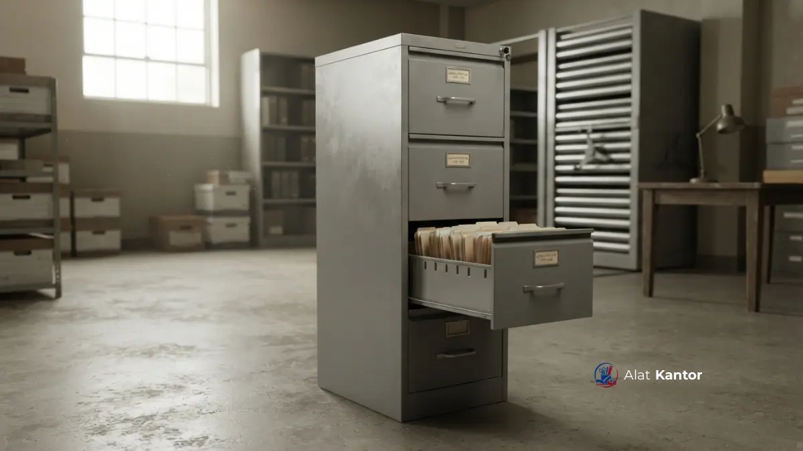

Ringkasan Artikel
- Plat tebal 0.8mm menjadi standar rekomendasi untuk filling cabinet besi yang digunakan instansi dengan volume dokumen tinggi.
- Kunci sentral memberikan keamanan lebih praktis dibanding kunci per laci pada lemari arsip besi konvensional.
- Kebutuhan dan faktor biaya kirim filling cabinet berbeda di setiap kota, terutama untuk pengadaan skala instansi.
- Perangkat dokumentasi legal seperti faktur pajak dan Surat Penawaran Harga berperan fundamental dalam mewujudkan transparansi dan akuntabilitas pengelolaan anggaran pengadaan barang pada tingkat instansi.
- Pemilihan supplier dengan layanan instalasi langsung mengurangi risiko kerusakan saat pemasangan filling cabinet.
Apa Spesifikasi Teknis Filling Cabinet 4 Laci yang Ideal?
Spesifikasi teknis filling cabinet 4 laci yang ideal untuk instansi mencakup plat baja tebal 0.8mm, sistem kunci sentral, rel laci berbahan besi dengan bantalan halus, serta finishing cat bubuk anti karat.
Filling cabinet 4 laci umumnya dirancang dengan dimensi standar sekitar 46 cm (lebar) x 62 cm (kedalaman) x 132 cm (tinggi), meskipun variasi ukuran dapat berbeda antar produsen. Setiap laci biasanya mampu menampung dokumen ukuran folio atau A4 dengan sistem gantung (hanging file) untuk memudahkan pengarsipan berdasarkan kategori.
Berikut komponen spesifikasi yang perlu diperhatikan saat membandingkan produk:
- Ketebalan Plat: 0.8mm memberikan struktur lebih kokoh dibanding plat di bawah 0.6mm yang lebih mudah penyok.
- Sistem Kunci: Kunci sentral mengunci seluruh laci sekaligus, lebih aman untuk dokumen sensitif instansi pemerintah.
- Rel Laci: Rel berbahan besi dengan bantalan bola (ball bearing) membuat laci lebih halus dan tidak macet meski terisi penuh.
- Finishing: Cat bubuk (powder coating) tahan gores dan anti karat penting untuk daya tahan jangka panjang di iklim tropis.
Mengapa Plat Tebal 0.8mm Penting untuk Filling Cabinet Besi?
Plat tebal 0.8mm penting untuk filling cabinet besi karena memberikan kekuatan struktural lebih tinggi dalam menahan beban dokumen dan benturan dibanding plat yang lebih tipis.
Filling cabinet dengan plat di bawah 0.6mm cenderung lebih ringan namun rentan penyok saat laci sering dibuka-tutup dalam frekuensi tinggi, seperti pada ruang arsip instansi pemerintah atau bagian tata usaha sekolah. Plat 0.8mm memberikan keseimbangan antara bobot yang masih wajar untuk mobilitas dan ketahanan terhadap penggunaan intensif jangka panjang.
Apa Keunggulan Kunci Sentral Dibanding Kunci per Laci?
Kunci sentral pada filling cabinet 4 laci memungkinkan seluruh laci terkunci sekaligus dengan satu putaran kunci, memberikan efisiensi dan keamanan yang lebih tinggi dibanding sistem kunci per laci.
Pada lemari arsip besi dengan kunci per laci, setiap laci memerlukan kunci terpisah yang berisiko tertukar atau hilang. Sistem kunci sentral menyederhanakan operasional harian, terutama untuk instansi dengan banyak pengguna yang mengakses filling cabinet secara bergantian, sekaligus mengurangi risiko laci tidak terkunci sempurna karena lupa.

Faktor Filling Cabinet 4 Laci di Jakarta
Kebutuhan filling cabinet 4 laci di Jakarta umumnya didorong oleh volume dokumen tinggi pada kantor pemerintahan dan perusahaan swasta berskala besar, dengan pertimbangan efisiensi ruang menjadi faktor utama.
Kantor-kantor di Jakarta seringkali memiliki keterbatasan ruang penyimpanan fisik, sehingga filling cabinet dengan desain vertikal dan kunci sentral menjadi pilihan populer untuk memaksimalkan kapasitas arsip tanpa memakan banyak area lantai. Pengiriman ke area Jakarta dan sekitarnya (Jabodetabek) umumnya dapat dijangkau dengan waktu pengiriman relatif cepat mengingat kepadatan jalur distribusi.
Faktor Filling Cabinet 4 Laci di Surabaya
Instansi di Surabaya cenderung memprioritaskan filling cabinet besi dengan ketahanan terhadap kelembapan, mengingat karakteristik iklim pesisir yang dapat mempercepat risiko karat pada furniture logam berkualitas rendah.
Finishing cat bubuk anti karat menjadi pertimbangan penting bagi sekolah, kampus, dan kantor pemerintah di Surabaya yang menyimpan dokumen jangka panjang seperti arsip kepegawaian dan surat perizinan. Pengadaan filling cabinet di Surabaya juga sering terkait dengan kebutuhan tender instansi yang memerlukan kelengkapan dokumen legal seperti faktur pajak.
Faktor Filling Cabinet 4 Laci di Malang
Sebagai basis layanan utama, pengadaan filling cabinet 4 laci di Malang mendapatkan keuntungan waktu pengiriman lebih singkat serta opsi layanan perakitan langsung di lokasi oleh teknisi tanpa biaya tambahan untuk wilayah Malang Raya.
Sekolah dan kampus di Malang banyak melakukan pengadaan filling cabinet melalui jalur SIPLah untuk kebutuhan ruang tata usaha dan kearsipan akademik. Kedekatan lokasi supplier dengan area Malang Raya memudahkan proses survei kebutuhan, konsultasi RAB, hingga instalasi tanpa menambah biaya logistik signifikan.
Faktor Filling Cabinet 4 Laci di Denpasar
Pengadaan filling cabinet di Denpasar umumnya mempertimbangkan waktu pengiriman lintas pulau serta kebutuhan pengemasan ekstra untuk melindungi unit selama proses distribusi ke Bali.
Instansi pemerintah dan sekolah di Denpasar tetap memerlukan filling cabinet dengan spesifikasi yang sama seperti kota besar lainnya, namun perlu memperhitungkan waktu tunggu pengiriman yang sedikit lebih panjang dibanding kota-kota di Jawa. Konsultasi jadwal pengiriman lebih awal disarankan terutama menjelang periode tutup anggaran.
Faktor Filling Cabinet 4 Laci di Makassar
Kebutuhan filling cabinet 4 laci di Makassar banyak berasal dari instansi pemerintah daerah dan kampus yang melakukan pengadaan melalui LPSE, sehingga kelengkapan dokumen legal menjadi faktor penentu utama dalam pemilihan vendor.
Selain spesifikasi fisik seperti plat tebal dan kunci sentral, instansi di Makassar umumnya memprioritaskan vendor yang dapat menerbitkan Surat Penawaran Harga dan faktur pajak secara resmi untuk mendukung proses pertanggungjawaban anggaran daerah.
Bagaimana Biaya Kirim Memengaruhi Harga Filling Cabinet di Berbagai Kota?
Biaya kirim filling cabinet dipengaruhi oleh jarak distribusi, volume pesanan, dan kebutuhan pengemasan tambahan untuk pengiriman lintas pulau seperti ke Denpasar atau Makassar.
Harga yang ditawarkan dapat berfluktuasi sesuai dengan detail spesifikasi produk, jumlah unit yang dipesan, serta destinasi pengiriman. Silakan menghubungi departemen kami untuk memperoleh penawaran resmi. Pemesanan dalam jumlah besar untuk kebutuhan instansi biasanya mendapatkan penyesuaian biaya logistik yang lebih efisien dibanding pembelian satuan.
Filling cabinet 4 laci dengan plat tebal 0.8mm dan kunci sentral menawarkan keseimbangan antara kekuatan struktural dan kemudahan operasional untuk kebutuhan kearsipan instansi. Faktor lokasi seperti Jakarta, Surabaya, Malang, Denpasar, dan Makassar memengaruhi waktu dan biaya pengiriman, namun spesifikasi dasar yang perlu diperhatikan tetap sama di seluruh Indonesia.
Pelajari lebih lanjut mengenai kategori produk teknologi presentasi pada artikel Mengenal Interactive Flat Panel sebagai bagian dari solusi kantor dan sekolah modern, atau lihat bagaimana filling cabinet menjadi bagian dari solusi lebih besar pada artikel Penyedia Paket Kelas Baru Siap Pakai di Malang Raya.
Untuk kebutuhan pengadaan produk secara langsung beserta konsultasi spesifikasi, hubungi tim kami melalui WhatsApp.